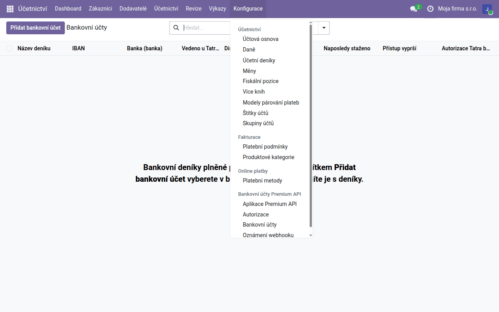
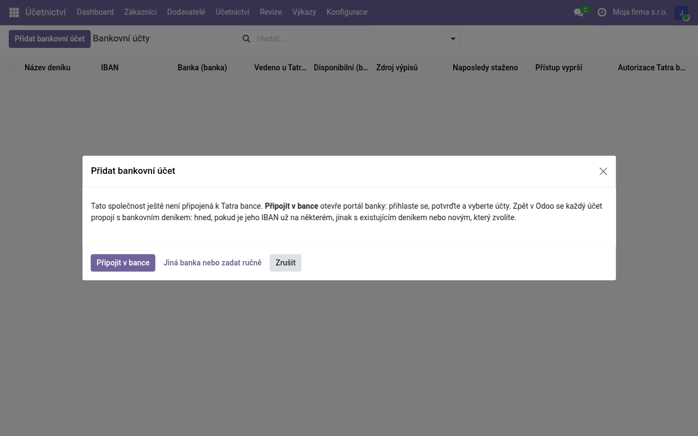
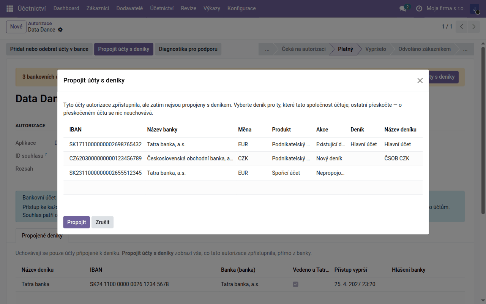
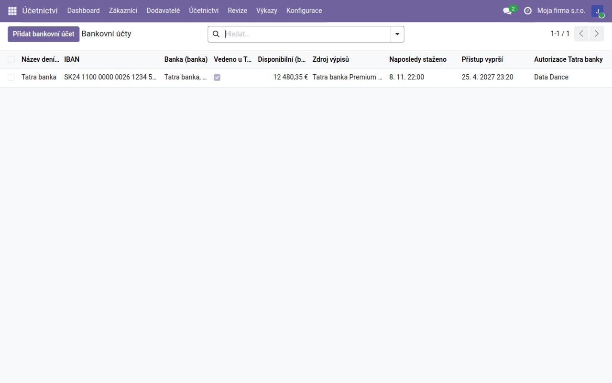
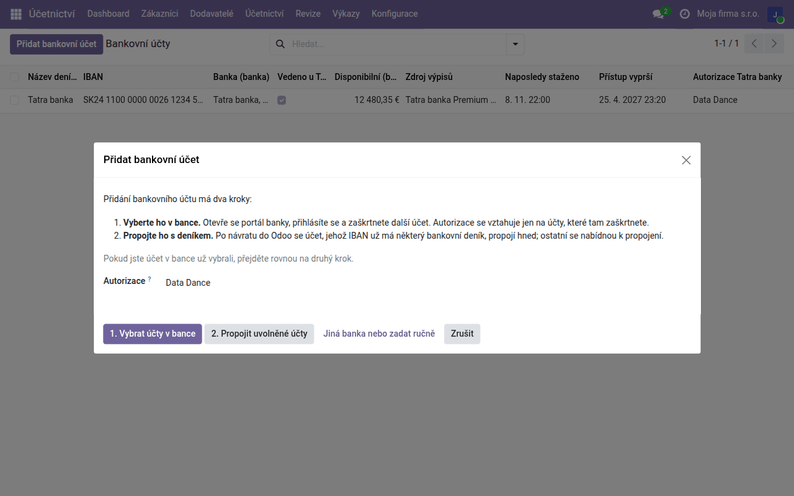
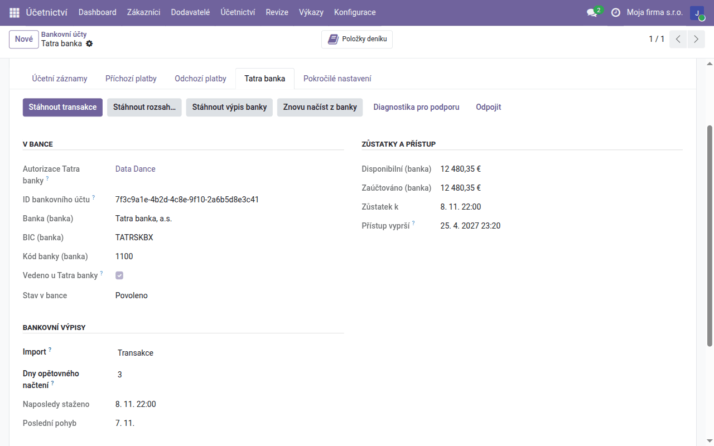

Návod k úloze
Automatické bankovní výpisy
Pohyby z vašich účtů u slovenských a českých bank přicházejí do Odoo samy každou hodinu, přes Premium API Tatra banky. Jen v placené hostované službě Data Dance.
| Země | Česko a Slovensko |
|---|---|
| Edice | Odoo Community |
| Zahrnuje | account_tatrabanka (dodává se samostatně), account_statement_tatrabanka (dodává se samostatně), account_tatrabanka_webhook (dodává se samostatně), l10n_cssk_payment_symbols, l10n_cssk_payment_symbols_oca |
Jen v placené hostované službě Data Dance. Připojení zapíná náš tým; mimo hostovanou službu není dostupné.
K čemu tento návod slouží
S tímto připojením se bankovní deník plní sám: Odoo se každou hodinu zeptá banky na nové pohyby a vytvoří z nich řádky výpisu se jménem a účtem protistrany, variabilním, konstantním a specifickým symbolem a zprávou pro příjemce. Nic není třeba stahovat z internetového bankovnictví ani importovat. Řádky se pak párují stejně jako z importovaného výpisu — automaticky podle variabilního symbolu a ručně v Párovat.
Premium API Tatra banky připojí vaše účty u slovenských a českých bank, nejen u Tatra banky.
Kdo má k čemu přístup
- Souhlas dáváte vy, přímo v bance. Na portál banky se přihlásíte svými údaji a sami vyberete, které účty zpřístupníte. Přihlašovací údaje do internetového bankovnictví nezadáváte do Odoo ani nám.
- Pohyby jdou z banky rovnou do vašeho Odoo. Služba Data Dance jimi neprochází a neukládá je.
- My vaše účty nevidíme. Služba Data Dance zajišťuje jen připojení k bance. Přístup, který udělíte, je uložen zapečetěný a bez vašeho Odoo se k vašim účtům ani pohybům nedostaneme.
- Souhlas můžete kdykoli odvolat v Odoo nebo přímo v bance.
Připojení
Začíná se v Účetnictví → Konfigurace → Bankovní účty Premium API → Bankovní účty.

-
Klikněte na Přidat bankovní účet. Dokud firma není s bankou spojená, nabídne se jediné tlačítko, Připojit v bance: autorizace se vytvoří sama a hned se otevře portál banky. Sem vede i tlačítko nastavení banky na řídicím panelu. Účet u banky, kterou Premium API nepřipojuje, zadáte tlačítkem Jiná banka nebo zadat ručně.

-
Na portálu banky se přihlásí osoba, která má k účtům aspoň pasivní práva do internetového bankovnictví, a označí účty, které zpřístupní. Dokončete to do 30 minut. Jednotlivé obrazovky portálu popisuje uživatelský manuál Tatra banky (PDF, slovensky).
-
Zpět v Odoo se bankovní deník, jehož číslo účtu je přesně zpřístupněný IBAN, připojí sám, a skončíte v seznamu Bankovní účty. Pokud některý účet deník nemá, Odoo vás pošle do autorizace: tlačítkem Propojit účty s deníky mu přiřadíte Existující deník, Nový deník nebo Nepropojovat a kliknete na Propojit. Odoo u každého účtu volbu navrhne.


-
Otevřete připojený deník a na kartě Účetní záznamy nastavte Bankovní napojení na Tatra banka Premium API. Na kartě Tatra banka zvolte Import: Transakce, nebo Transakce + měsíční výpisy (jeden výpis za měsíc), a klikněte na Stáhnout transakce.
Od té doby se transakce stahují každou hodinu; tlačítkem Stáhnout rozsah… doplníte starší (15 měsíců zpět u účtů u Tatra banky, 13 u účtů u jiných bank). Importují se jen zaúčtované pohyby.
Další bankovní účet
Autorizace sahá jen na účty zaškrtnuté v bance. Další účet přidáte ve stejném seznamu Bankovní účty tlačítkem Přidat bankovní účet: 1. Vybrat účty v bance otevře portál banky, kde účet zaškrtnete, a 2. Propojit uvolněné účty ho po návratu přiřadí k deníku.

Souhlas platí 180 dní a patří osobě, která ho udělila. Dva týdny před koncem dostane autorizace aktivitu o blížícím se vypršení přístupu; souhlas obnovíte tlačítkem Přidat nebo odebrat účty v bance v autorizaci (Bankovní účty Premium API → Autorizace), deníky zůstanou připojené. Pokud osoba se souhlasem odchází, nechte autorizovat někoho jiného dřív, než odejde.
Kontrola
- V seznamu Bankovní účty vidíte u každého účtu disponibilní zůstatek, Naposledy staženo a kdy přístup vyprší.
-
Na kartě Tatra banka deníku jsou v části Bankovní výpisy pole Naposledy staženo a Poslední pohyb.

-
Neúspěšné stažení se zapíše do historie deníku s důvodem od banky; ostatní deníky se stáhnou i tak.
- Na konci měsíce porovnejte konečný zůstatek v Odoo se zůstatkem ve výpisu banky — zůstatky měsíčních výpisů se počítají z řádků, nepřebírají se z banky.